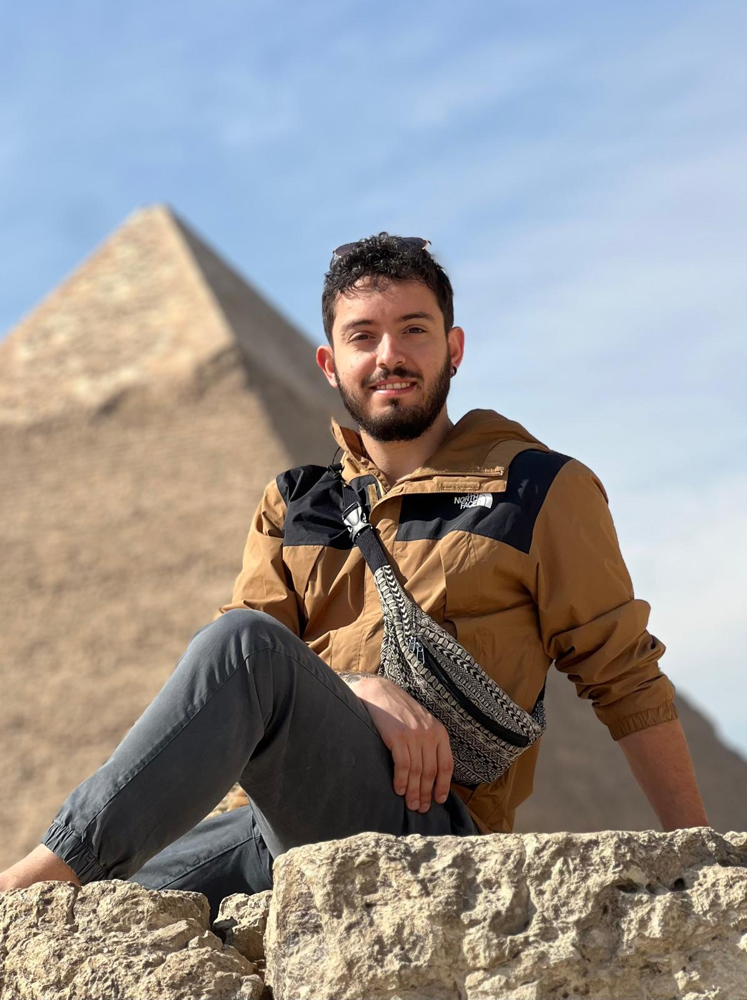

INTRODUCTION
Hello, I'm
Dr. Pablo Rodríguez Ovalle.

I am an astrophysicist specializing in planetary science, currently working as a postdoctoral researcher at the Instituto de Astrofísica de Andalucía (IAA-CSIC), in Granada, Spain. My research focuses on the atmospheres of Solar System planets, particularly Jupiter and the other giant planets, as well as Mars. I use near- and mid-infrared spectroscopy, space-based observations, and radiative-transfer modelling to investigate atmospheric composition, thermal structure, and the physical processes governing planetary atmospheres.
My research career began at the University of the Basque Country (UPV/EHU), where I joined the Planetary Sciences Group for my Master's thesis in 2021. During this period, I studied the dynamics of the south polar vortex of Venus using infrared observations acquired by the VIRTIS instrument aboard ESA's Venus Express mission. This experience introduced me to the analysis of planetary observations and the study of atmospheric dynamics, establishing the foundations of my subsequent research.
In September 2021, I moved to France to pursue my PhD at the Observatoire de Paris, in association with Université Paris Cité, under the supervision of Thierry Fouchet. I completed my doctoral research in December 2024 with a thesis entitled “Study of Jupiter's atmosphere with the first data from JWST.” My work focused on the analysis of the first observations of Jupiter obtained by the James Webb Space Telescope, particularly using its MIRI instrument. I investigated the temperature and chemical structure of Jupiter's atmosphere, with special attention to the southern auroral region and the effects of energetic particle precipitation. During this period, I also participated in the reduction and analysis of JWST/MIRI, NIRSpec, and NIRCam observations through the Early Release Science programme ERS 1373.
Read full biography
Alongside my PhD research, I participated in university teaching at the Observatoire de Paris, contributing to Master's-level courses in optics, instrumentation, exoplanets, observational techniques, and statistical physics. I also contributed to the supervision of a Master's thesis on Jupiter's stratospheric temperatures using JWST/MIRI. These experiences allowed me to develop my interests in teaching, student supervision, and collaborative research.
In March 2025, I joined the Instituto de Astrofísica de Andalucía (IAA-CSIC) as a postdoctoral researcher, extending my research to the Martian atmosphere. Using solar occultation observations from the ACS-MIR instrument aboard the ExoMars Trace Gas Orbiter, I focused on the climatology and vertical distribution of carbon monoxide (CO). This work involves detailed spectroscopic analysis, instrumental characterization, and atmospheric retrievals aimed at improving our understanding of the spatial and seasonal variability of CO on Mars.
Since September 2026, I have continued my postdoctoral research at the IAA-CSIC, investigating trace species in the Martian atmosphere with ExoMars TGO while maintaining my involvement in giant-planet studies with JWST. I also participate in several international collaborations and observing programmes, including investigations of Jupiter's auroral chemistry and atmospheric structure. In addition, I lead projects focused on exogenic molecules in Jupiter and on the comparative analysis of methane in the four giant planets, with the aim of constraining their vertical distributions and homopause altitudes.
My work combines observational spectroscopy with radiative-transfer modelling under both local thermodynamic equilibrium (LTE) and non-LTE conditions. Across different planetary environments, my main objective is to extract as much physical information as possible from infrared observations and use it to better understand the composition, structure, and evolution of planetary atmospheres.